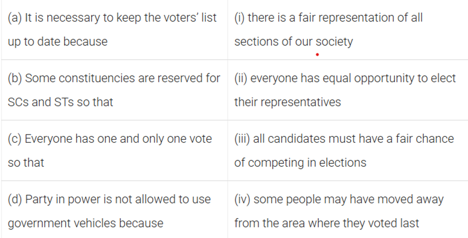

What is meant by the standard Meridian? Explain its importance.
Why the difference between duration of day and night is hardly felt at Kashmir but not in Kanyakumari?
How is the location of India advantageous? (Explain in detail)
Write a note on neighbors of India.
Answer the following terms:
Latitude
Longitude
Suez Canal
Palk Strait
Longest Border
Physical Features of India
Write the name of different physical features of India.
Short note on Himalayan mountains.
Explain in detail about different ranges of Himalayas.
Differentiate between:
Central Highlands & Deccan Plateau
Eastern Ghats & Western Ghats
Eastern Coastal Plain & Western Coastal Plain
Andaman & Nicobar & Lakshadweep Island
Write a short note on Indian desert.
Key terms:
Doab
Highest Peak Of India
Highest Peak Of World
Write a detailed note on northern plains of India.
How can you say that all the physical features of India are complementary to each other?
Climate
Differentiate between climate and weather.
What are the different factors responsible for differences in climate conditions? (Hint: Climate Controls)
Explain in detail about all the seasons of India.
Why is monsoon considered a unifying bond?
Differentiate between advancing monsoon and retreating monsoon season.
Key terms:
Monsoon
Loo
Mango Shower
Kal Baisakhi
ITCZ
Ferrel’s Law
Corolis Force
Jet Stream
Population
Key Terms:
Census
Annual Growth Rate
Migration
Explain the variations in population size and distribution in India.
Define the term “Population Density.”
What is meant by Population Growth (Population Change)? Explain various factors responsible for this.
Define Adolescent Population in India.
Write a detailed note on “National Population Policy.”
Highest Sex Ratio in India.
Write a note on Population Density of India.
Why has the rate of population growth in India been declining since 1981?
How is migration a determinant factor of population change?
Distinguish between Population Growth and Population Change.
What are the advantages of having a healthy population?
Explain in detail about the various features of National Population Policy 2000.
Map work:
High Population density
Low Population density
People as a Resource
Define the term:
People As A Resource
Mid-Day Meal
Unemployment
Green Revolution
IMR (Infant Mortality Rate)
GDP (Gross Domestic Product)
How are Human Resources different from other resources like land & physical capital?
Explain the role of education in human capital formation.
Explain the role of health in human capital formation.
[Hint: ]
Differentiate between Primary, Secondary, and Tertiary sectors/activities based on their nature.
What are the causes of unemployment?
Explain the types of unemployment.
Discuss the effects of unemployment.
Differentiate between:
Economic Activities & Non-Economic Activities
Market Activity & Non-Market Activity
How can we create employment opportunities in rural areas?
Explain the characteristics and components of the Green Revolution.
Poverty as a Challenge
Define the terms:
Poverty
Social Exclusion
Vulnerability
How Poverty is seen by social scientists?
What is poverty line? How it is determined In India?
Social groups vulnerable in India?
Explain in detail about Global Poverty scenario across the world.
What are causes of Poverty?
Do you think that present methodology of poverty estimation is appropriate?
Who are the poorest of the poor?
Describe the current government strategy of poverty alleviation:
NREGA (Mahatma Gandhi)
PMRY
REGP
PMGY
AAY
What is Democracy and Why Democracy?
Define the terms:
Democracy
Dictatorship
Why the following countries are not called a democratic country:
Pakistan
Mexico
China
Zimbabwe
Features/Merits of Democratic Country.
Criticize/Demerits of Democratic Country.
Differentiate between:
Direct democracy
Indirect democracy
Constitutional Design
Define:
Apartheid System
Segregation
Differentiate Between:
Democratic Country
Non-Democratic Country
What is Constitution? Why do we need a Constitution?
Write any five guiding values of Constitution.
Define Preamble.
What are the silent features of the democracy?
Electoral Politics
Define the term:
Elections
Constituency
Rigging
Voter-turnout
Incumbent
Why do we need elections?
Explain what makes election in India democratic?
What are the various challenges to free and fair elections In India?
Explain the different stages of elections.
Write about the Interstate disparities in India.
Define the term:
Ballot Paper
Ballot Box
E.V.M
General Election
Mid Term Election
Bye Election
Which of following statements about reason for conducting elections are false?
(a) Elections enable people to judge the performance of the government.
(b) People select the representative of their choice in an election.
(c) Elections enable people to evaluate the performance of the judiciary.
(d) People can indicate which policies they prefer.
Which of these is not a good reason to say that Indian elections are democratic?
(a) India has the largest number of voters in the world.
(b) India’s Election Commission is very powerful.
(c) In India, everyone above the age of 18 has a right to vote.
(d) In India, the losing parties accept the electoral verdict.
Match: ]
Can we draw the following conclusions from the information given in this chapter? Give two facts to support your position for each of these.
(a) E.C. of India does not have enough powers to conduct free and fair elections in the country.
(b) There is a high level of popular participation in the elections in our country.
(c) It is easy for party in power to win election.
(d) Many reforms are needed to make our elections completely free and fair.
Here are some reports of electoral malpractices from different parts of world. Is there anything that these countries can learn from India to improve their elections? What you will suggest in each case?
(a) During an election in Nigeria, the officer in charge of counting votes deliberately increased the votes of one candidate and declared him elected. The court later found out that more than five lakh exercises votes cast for one candidate were counted in favour of another.
(b) Just before elections in Fiji, a pamphlet was distributed warning voters that a vote for former Prime Minister, Mahendra Chaudhry will lead to bloodshed. This was a threat to voters of Indian origin.
(c) In the US, each state has its own method of voting, its own procedure of counting, and its own authority for conducting elections. Authorities in the state of Florida took many controversial decisions that favoured Mr. Bush in the presidential elections in 2000. But no one could change those decisions.
Here are some reports of malpractices in Indian elections. Identify what the problem in each case is. What should be done to correct the situation?
(a) Following the announcement of elections, the minister promised to provide financial aid to reopen the closed sugar mill.
(b) Opposition parties alleged that their statements and campaign were not given due attention in Doordarshan and All India Radio.
(c) An inquiry by the Election Commission showed that electoral rolls of a state contain the name of 20 lakh fake voters.
(d) The hoodlums of a political party were moving with guns, physically preventing supporters of other political parties to meet the voters and attacking meetings of other parties.
Working of Institutions
Write Functions and Powers of:
Prime Minister
President
Judiciary
What are the two types of executives? Also write the meaning of executive.
What was Mandal Commission?
Differentiate between:
Lok Sabha
Rajya Sabha
Which house of parliament is more powerful?
French Revolution
What were the reasons behind empty treasury upon Louis XVI accession?
Describe the social structure of France in the old regime. (Hint: Before 1789, 3 Estates)
What was the reason behind the subsistence crisis in France?
Role of philosophers in French Revolution.
Explain the formation of National Assembly.
How did France become a constitutional monarchy?
Write a short note on Jacobin Club.
Who was Robespierre? Why is the period from 1793-1794 referred to as the “Reign of Terror”?
Why did women participate in the French Revolution?
Explain the process of triangular slave trade in Europe.
Explain the impact of Napoleon on French society.
Various political symbols used by French revolutionaries to inspire the people.
Short note on Olympe de Gouges.
Socialism in Europe & Russian Revolution
Who were Liberals?
Who were Conservatives?
Who were Radicals?
Describe the problems associated with industrialization in Europe.
Define the term Socialism and their emergence in Europe.
Explain the Russian Empire in 1914. (Hint: Social, Political & Economic conditions)
Explain the event of Bloody Sunday in your own words.
Describe the impact of World War I on Europe.
Write the events of the February Revolution.
Who was Lenin?
Write the events of the October Revolution and their impact on Europe.
Explain the policy of collectivization of Stalin.
What were the main changes brought by Bolsheviks immediately after the October Revolution?
Write a few lines about:
Kulaks
Duma
Other Questions
Explain the term PDS. Explain its current status also.
Write the name of different stages of elections in India. Also describe the importance of the voters' list in your own words.
Define the term monsoon and food security.
Explain the causes of food security in India.
Why do we need food security?
Explain Electoral constituencies.
Powers and functions of the Supreme Court.
How can you say that all the physical features of India are complementary to each other?
 ]
]